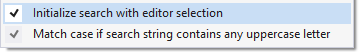

Find Symbol in Solution
Find symbols in your solution quickly with a dropdown in the VA View, or with a more powerful dialog (Shift+Alt+S). Filter results with prefixes, multiple strings, and negative filters.
Open a context menu in the dialog to set advanced options.

Learn more.